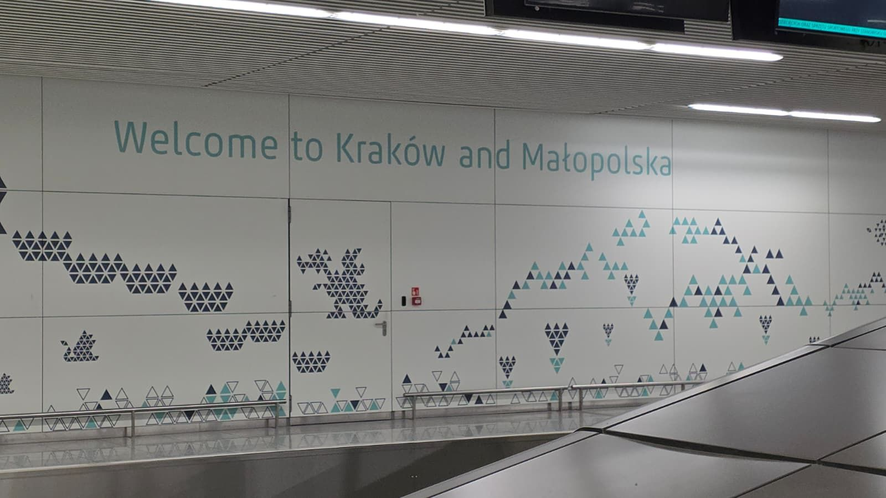
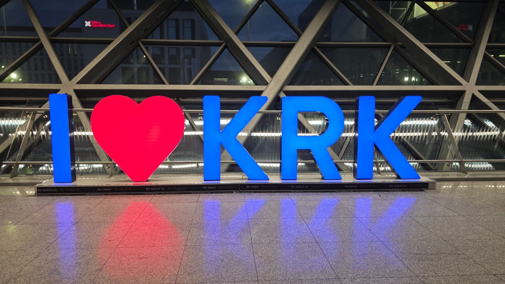
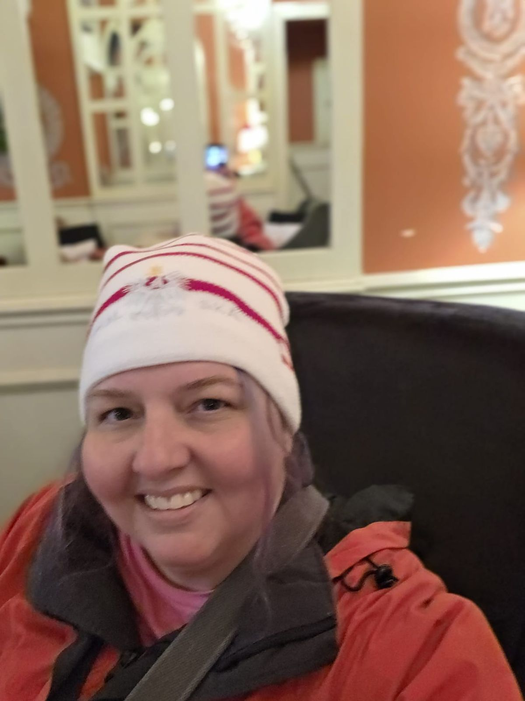
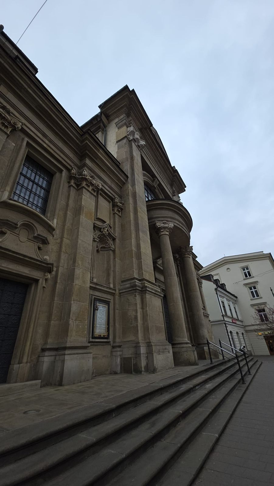
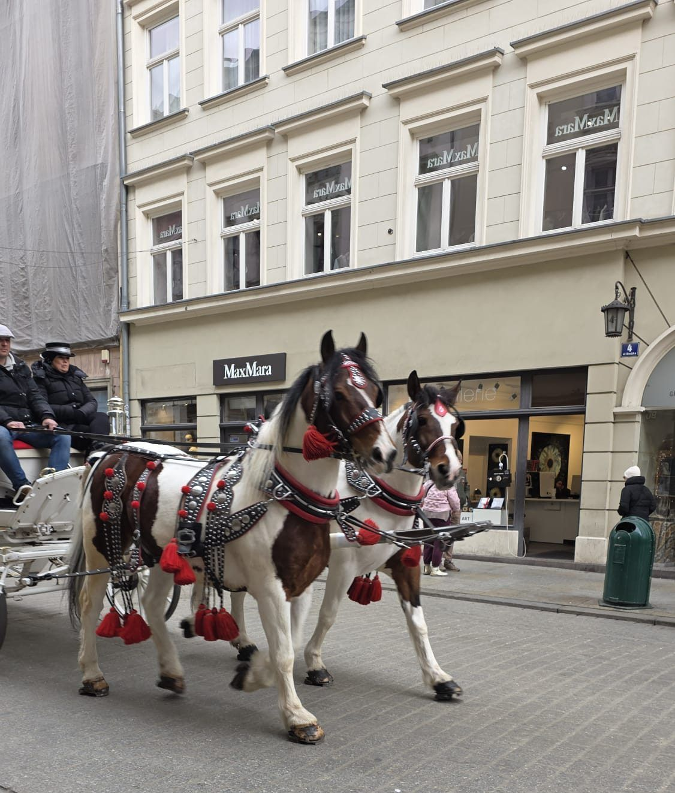
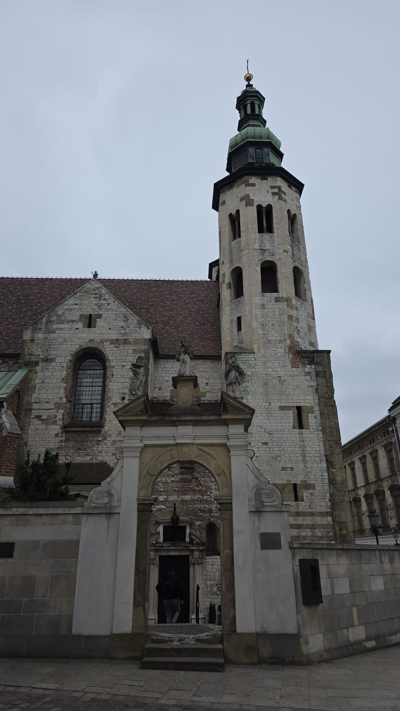
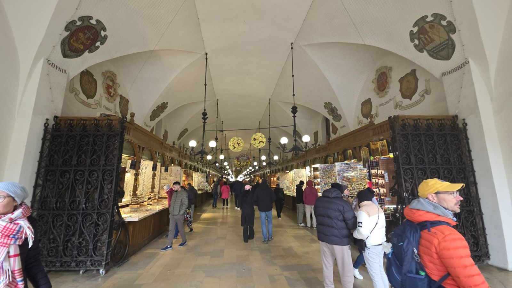
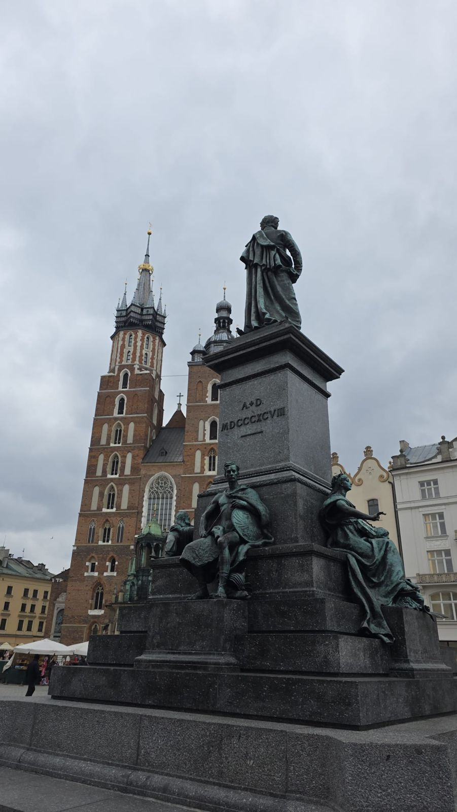

Journey 05 · Kraków Note 1 of 3 Field Note
Krakow: Unexpected
I flew into Krakow, which I immediately regretted. After weeks of train travel, with its comfortable seats, easy rhythm lulling you into relaxation, and the views letting you feel as though you are actually moving through the landscape, I knew the moment I stepped into the line of grumpy travelers at the airport I had made a mistake. Rather than arriving a comfortable half hour before my train, more than enough time to get a snack and wander the station, I had arranged to arrive the recommended 4 hours before my flight. The boring grey interior of the airport, punctuated by overpriced duty-free shops and luxury brands, was a poor replacement from the beautiful architecture of the major train stations I had been frequenting.

In the end, though the flight was only an hour compared to the 6-hour train ride, once I accounted for the long drive out to the airport and the waiting before and after the flight for security and luggage drop off and pick up, I had well surpassed that. My future travel plans are firmly attached to trains now.
Traveling by train provides something else aside from the ability to walk around and stretch easily. With a train, you can gradually arrive someplace. Out the window, you can watch the changes in a landscape – the colors, the weather, the geography – and the changes in the towns and cities you cross. You begin to see a country and a place before you fully arrive. As people come and go, you can build an expectation of where you are going, and what it will be like.
On a plane, you arrive without context, dropped into a place without having watched it approach. In the morning, you are enjoying sunshine and 70-degree weather, wearing capri pants and a new t-shirt you just bought at a tourist shop. And a few hours later, you are standing outside the airport in Poland where it is 26-degrees wondering why you can book international travel like a professional but cannot manage to check a weather forecast when packing.

Every item of warm clothing I owned was sitting dirty in a bag, saved deliberately for the hotel laundry I had planned ahead for when packing. I can minimize what I bring by planning to do laundry halfway through! Aren’t I clever? A seasoned traveler now, officially. My planning had been so thorough in one direction that I had forgotten to plan for the possibility of freezing.
This is where Josef came in.
Josef was my pre-arranged taxi driver from the airport, elderly and grandfatherly in exactly the way that word is supposed to mean: patient, watchful, quietly concerned about whether I was going to be alright. He took one look at me in my Capri pants standing in the Polish April night air and was (justifiably) worried. He made sure I got safely into my building that first night. When I messaged him the next morning to arrange a ride, he sent me the weather forecast first, then asked if I needed to stop for warmer clothes.
We communicated mostly through WhatsApp and translation software, which turns out to be a perfectly adequate way to build a friendship. After the first ride he insisted I sit up front. By the second day he had appointed himself the official supervisor of my cold weather preparedness.

I bought an oversized hoodie, a Poland-themed snow hat with a poof ball, and gloves. Josef approved. Before every subsequent trip he would check: hat? Gloves? “It’s okay now, but tonight if you stay out it will be cold!”
He was always right, of course.
I had arrived with a specific image of what Poland would be. My impression was assembled from history books and Cold War documentaries and a general cultural impression that had never been corrected. When Americans say “I am traveling to Europe”, what comes to mind is Paris, Italy and Spain, not necessarily central and eastern Europe.
If I recall from my own dated school textbooks from the late 90s and early ‘aughts correctly, they still listed Czechoslovakia as a country and gave a general impression of the area being “Cold War Russia Lite”. I distinctly remember my contemporary unit final essay being on Reagan and the Berlin wall, his declaration of “I am a donut!” centrally featured.
I imagined grey. Communist bloc architecture, functional and joyless, a city stuck in time. If Krakow were a person, I had decided, it would be a babushka with a frowny, slightly disapproving, face who knew exactly what you had done wrong and was not going to pretend otherwise.
Krakow was not that.

Despite the insistent grey and cloudy skies threating snow every day, Krakow was colorful!

Medieval buildings with beautifully decorated facades lining cobblestone streets that wound through the old town in the unhurried way of cities that predate the idea of a grid. A market square that has been in continuous use since the Middle Ages, still busy, still the center of everything, ringed with cafes and street musicians and horse drawn carriages that clip-clopped past with an air of complete historical indifference to the tourists photographing them.
If the city were a person, it would be an older creative arts professor, not a grumpy old woman. Someone who has seen a great deal, finds most of it interesting, and is watching the world go by with quiet amusement rather than judgment.
The older buildings had something I hadn’t expected at all: names. Not street numbers, but names. Their own identities, announced through the art and decorative facades of the building itself. (Or in some cases the owners names, but those were far less interesting by comparison).

The Horse House. The House of Three Fishes. Bells House. Palace under the Rams. Golden Elephant House. Singing Frog House. Spider House, which has a large stone spider and web on its facade in case you were wondering if that was literal.
I learned later, on a tour where my guide handled my questions with considerable patience, that this system predated street numbers entirely. Before the Austrians arrived and introduced the more functional but considerably less fantastical numbering system, your address was your house. You lived at the Spider House. You sent letters to the Golden Elephant.
It was a city that had named its buildings the way you name pets: with personality and the assumption that of course each one was worth distinguishing from the other.
I liked Krakow immediately.
The cold stayed for my entire visit. The April chill, I was told, was not unusual and expected. It was not a brutal cold that kept you inside and unwilling to venture out, but it was persistent damp cold, with a particular talent for finding you when you thought you had dressed well enough. Josef’s hat and gloves became non-negotiable additions to my daily wear. I wore layers under hoodies and hoodies under jackets. I mostly made peace with it, accepting that I would have to undress and redress in every restaurant and store I spent more than a few minutes in to avoid death by overheating.

And walking the city helped. There was always something to look at. The medieval market still functioning as a market. Street musicians. The Wawel Castle sitting above the city on its hill, its strange dragon statue blowing out flames every few minutes.
On my first afternoon, wandering through the market, I heard something that stopped me. A bugle call, clear and bright, carrying over the square.
After decades in the military I immediately knew the sound of a bugle and thought of Taps, even though the melodies were not truly that similar. But still, my innate urge to stand up straighter and come to attention was a reflex.
I stopped walking and listened, trying to place where the musician was located. And then, as suddenly as it had started, it cut off. Mid-note.
I stood there for a moment, genuinely confused. I could tell it was live. I looked around for the source and couldn’t find it.

I wandered around the square, following the direction of where I thought the sound was coming from, but the music was simply gone, no musician to be seen. That afternoon I heard it again. And again the same sudden, abrupt ending, the note that just stopped. Over and over, in different parts of the city, I would hear occasional echoes of the music, the direction changing unexpectedly and always leaving me asking “Did I… really hear that?”
It wasn’t until my third day that I learned the story. And when I did, that abrupt silence, which had been slightly unsettling, slightly melancholy, slightly mysterious, took on a whole new meaning.
But that is another story.
Mentioned in
Originally published at fieldnotesfromabroad.com/2026/04/25/krakow-unexpected/